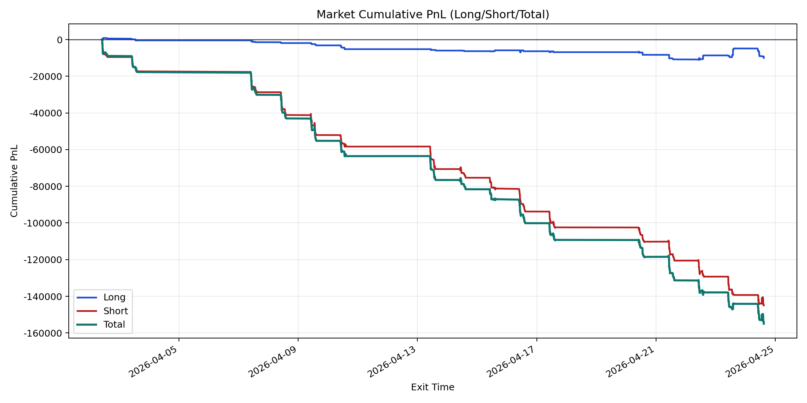
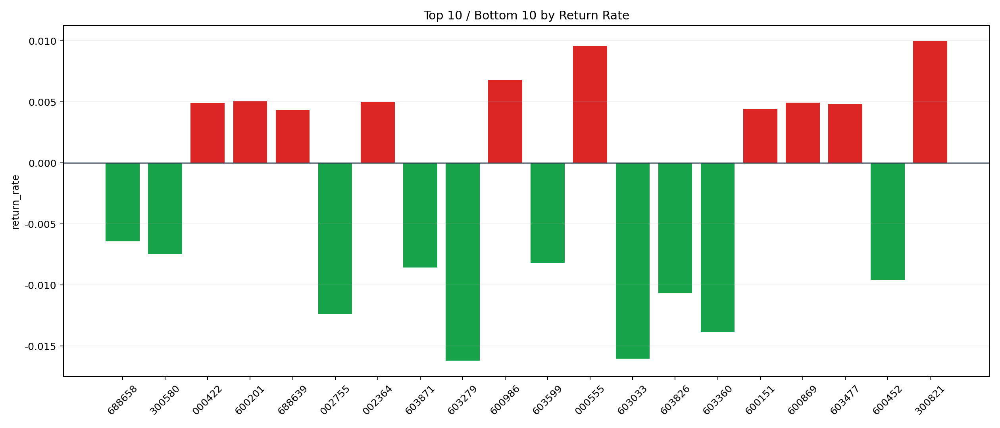

| repo_root | /home/haoranyou/data/output/dynamic_AUM_TAKER_index1000 |
|---|---|
| period_months | 1 |
| period_label | 2026-04-02_to_2026-04-24 |
| start_time | 2026-04-02 10:06:32 |
| end_time | 2026-04-24 14:45:22 |
| n_trades | 5386 |
| n_symbols | 171 |
| total_pnl | -154964.15580000085 |
| long_total_pnl | -9986.590649999802 |
| short_total_pnl | -144977.56515000106 |
| total_entry_notional | 91407131.0 |
| long_entry_notional | 9636340.0 |
| short_entry_notional | 81770791.0 |
| total_return_rate | -0.001695318014083615 |
| long_return_rate | -0.0010363468547186798 |
| short_return_rate | -0.0017729749630280701 |
| top_symbols_by_return | ["300821", "000555", "600986", "600201", "002364", "600869", "000422", "603477", "600151", "688639"] |
| bottom_symbols_by_return | ["603279", "603033", "603360", "002755", "603826", "600452", "603871", "603599", "300580", "688658"] |

